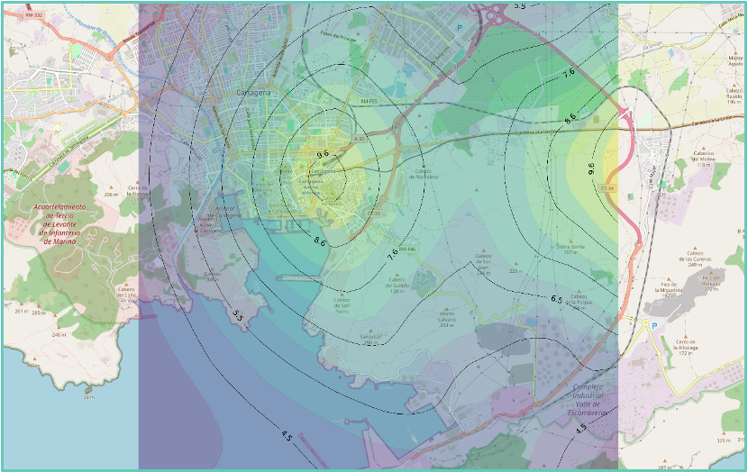

Predictive maintenance
Telemetry and sensor analysis to identify failures, degradation or anomalies before shutdown.
Qartia applies artificial intelligence on data captured in the field to detect patterns, anticipate events, launch alerts and facilitate decisions in industrial, environmental, urban or agricultural environments.
Our approach combines data platforms, sensors, connectivity, edge, dashboards and advanced services such as predictive maintenance, RAG assistants, digital twins and operational visualization.
The result is an AI useful for real operation: connected to the devices, aligned with the project logic and prepared to integrate with the client's existing infrastructure.
Telemetry and sensor analysis to identify failures, degradation or anomalies before shutdown.
Detection of anomalous behavior and generation of contextualized warnings.
Operational representation of systems, assets or spaces to visualize and test scenarios.
Natural consultation on data, documents, events and system operation.
AI is integrated with the visualization, alarms and data exploitation layer so that the model has an impact on maintenance, environment, technical assistance or service control.
The RAG wizards allow you to consult readings, history, technical documentation, patterns and system behavior without manually browsing tables or graphs.


Predictive and monitoring services on telemetry from the devices themselves.
Email or messaging notifications for values out of range or anomalous patterns.
Applicable to operation, training, architectural heritage and civil infrastructure.
Natural query on captured data, documents and operating context of the system.
AIoT platforms for sustainability, quality of life and operational reading of the urban environment.
VPN, secure cloud, traceability and remote services for connected deployments.
Services compatible with solarized solutions, anti-vandalism and complex deployments.
Ability to start as a pilot and evolve to a stable service within the same architecture.
Stable capture, structure, labeling and context of use of the system.
Definition of rules, prediction, RAG query or advanced visualization as needed.
Dashboards, alerts, APIs, workflows and real users within the day-to-day life of the project.
Service adjustment, impact evaluation and progressive evolution of the model or assistant.
Qartia can help you connect data, platform and analytics so that artificial intelligence has a clear operational use from the first pilot.